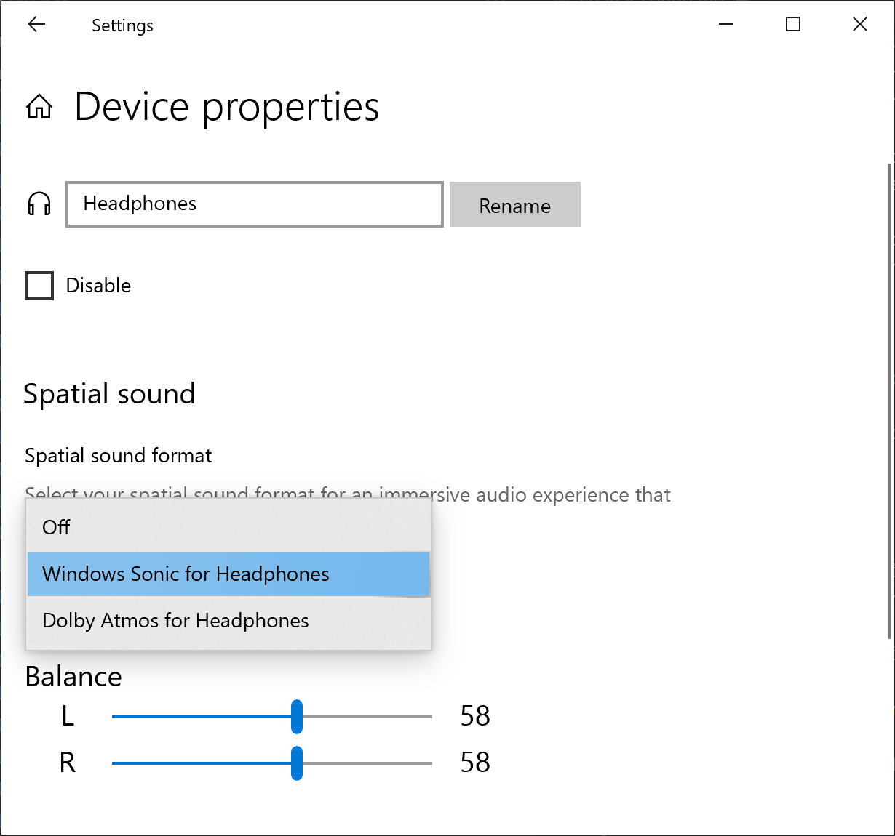
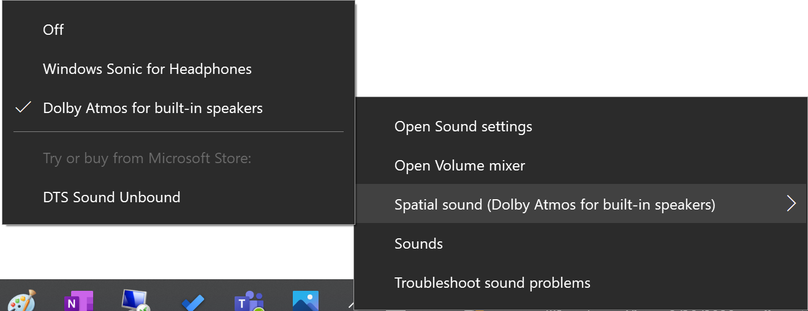
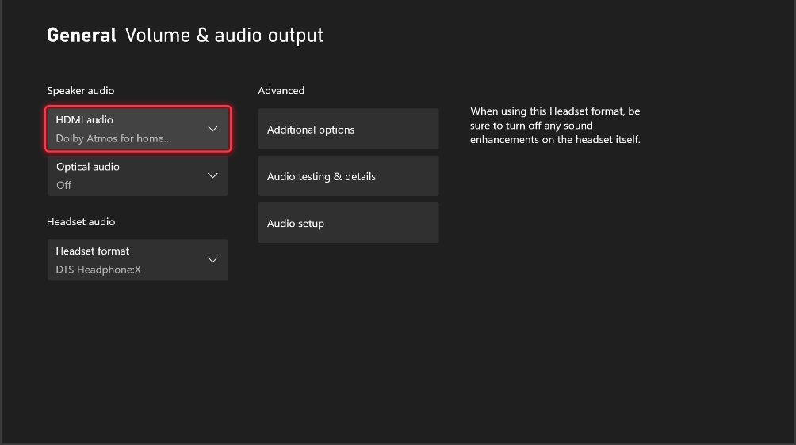
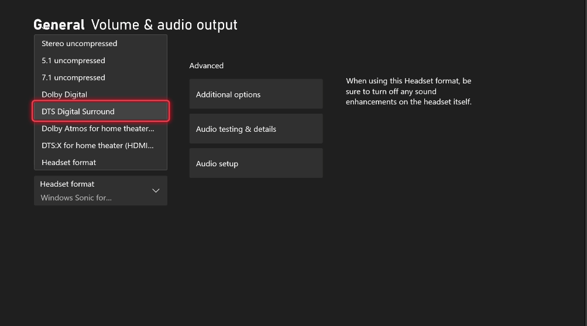
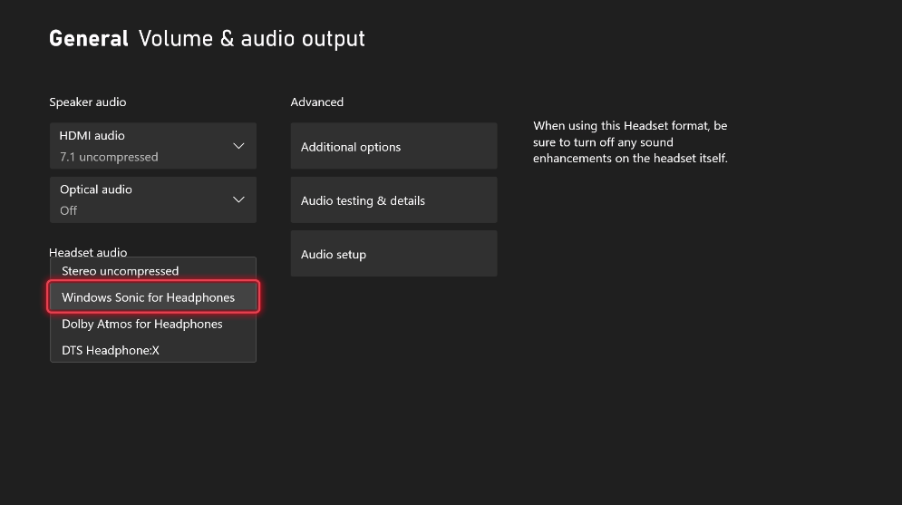

[!Note] This documentation is targeted for a developer audience. For end-user support for enabling spatial sound on your device, see How to turn on spatial sound in Windows 10.
Microsoft Spatial Sound is Microsoft’s platform-level solution for spatial sound support on Xbox, Windows and HoloLens 2, enabling both surround and elevation (above or below the listener) audio cues. Spatial sound can be leveraged by Windows desktop (Win32) apps as well as Universal Windows Platform (UWP) apps on supported platforms. The spatial sound APIs allow developers to create audio objects that emit audio from positions in 3D space. Dynamic audio objects allow you to emit audio from an arbitrary position in space, which can change over time. You can also specify that audio objects emit sound from one of 17 pre-defined static channels (8.1.4.4) that can represent real or virtualized speakers. The actual output format is selected by the user, and can be abstracted from Microsoft Spatial Sound implementations; audio will be presented to existing speakers, headphones, and home theater receivers without needing any code or content changes. The platform fully supports real-time Dolby Atmos encoding for both HDMI and stereo headphone output, DTS:X for Headphones, and Windows Sonic for Headphones encoding for stereo headphones. Finally, Microsoft Spatial Sound apps abide by the system mixing policy, and their audio will also be mixed with non-spatially aware apps. Microsoft Spatial Sound support is also integrated into Media Foundation; apps that use media foundation can successfully play Dolby Atmos content with no additional implementation.
Spatial sound with Microsoft Spatial Sound supports TVs, home theaters, and sound bars that support Dolby Atmos. Spatial sound can also be used with any pair of headphones the consumer may own, with audio rendered by the platform using Windows Sonic for Headphones, Dolby Atmos for Headphones, or DTS Headphone:X.
Whether as a developer or a consumer, a user must enable Microsoft Spatial Sound on their device in order to hear spatialized sound.
On Windows PCs, this is done via the properties page for a given sound output device. From the Sound control panel, select an output device and click Device properties. In the Spatial sound section of the page, if the device supports spatial sound, you can select one of the available formats from the Spatial sound format dropdown.

You can also enable Microsoft Spatial Sound by right-clicking the Volume icon in the taskbar.

On Xbox, Microsoft Spatial Sound capabilities are always available for the consumer, and are enabled via the Settings App under General -> Volume & audio output.
The HDMI audio button is populated with all the formats supported by the Audio Video Receiver (AVR) or Soundbar or the TV that is directly connected to your Xbox console. The “Optical audio†option is only available on older Xbox consoles and not on Xbox Series X|S and above.

Note that selecting the “Dolby Atmos for home theater (HDMI only)†or “DTS:X for home theater (HDMI only)†options in HDMI audio will prompt the user to download and install Dolby Access or DTS Sound Unbound apps if not already installed

Select Dolby Atmos for Headphones, DTS Headphone:X, or Windows Sonic for Headphones from the Headset format dropdown under Headset audio

When Microsoft Spatial Sound is not available (for instance, when playing to embedded laptop stereo speakers, or if the user has not explicitly enabled Microsoft Spatial Sound per above), the number of available dynamic objects returned by ISpatialAudioClient::GetMaxDynamicObjectCount to an application will be 0.
On HoloLens 2, Microsoft Spatial Sound is enabled by default and uses hardware DSP offload designed specifically for Windows Sonic for Headphones.
Many app and game developers use third party audio rendering engine solutions, which often include sophisticated authoring and auditioning tools. Microsoft has partnered with several of these solution providers to implement Microsoft Spatial Sound in their existing authoring environments. This will frequently mean the APIs discussed here are abstracted from the app’s view; they are wrapped as digital signal processing (DSP) plug-ins that the app can instantiate, and which the app’s audio implementer can use to mix to a Microsoft Spatial Sound channel bed, submix, or send individual voices to dynamic object instance plug-ins as desired. Consult with your audio middleware solution provider for their level of support for Microsoft Spatial Sound.
Many audio renderers target a Windows Audio Session API (WASAPI) IAudioClient endpoint, where the application feeds buffers of mixed and format-conformed audio data to a WASAPI audio sink; the delivered buffers are then consumed for mixing with other clients, final system-level processing, and rendering.
Microsoft Spatial Sound spatial endpoints are implemented as ISpatialAudioClient, which has many similarities to IAudioClient. It supports static sound objects forming a channel bed, with support for up to 8.1.4.4 channels (8 channels around the listener – Left, Right, Center, Side Left, Side Right, Back Left, Back Right, and Back Center; 1 low frequency effects channel; 4 channels above the listener; 4 channels below the listener). And it supports dynamic sound objects, which can be arbitrarily positioned in 3D space.
The general implementation coding pattern for ISpatialAudioClient is:
Note that the current output format (speakers or headphones; Windows Sonic for Headphones, Dolby Atmos, or DTS Headphone:X) is abstracted from the above implementation – the app developer can focus on spatial sound without needing to pivot based on format. Apps that do want their behavior to diverge based on output format can query the format in use, but the abstraction means an app is not required to handle these formats.
Because ISpatialAudioClient is an audio sink that consumes data, an audio renderer has several options for how to interact with and deliver audio data to it. There are three commonly used integration techniques (and for titles using audio middleware, you may see equivalent plug-ins made available based on these options):
Renderers can also mix and match between these approaches.
On Windows and Xbox, the number of available voices varies based on the format in use. Dolby Atmos formats support 32 total active objects (so if a 7.1.4 channel bed is in use, 20 additional dynamic sound objects can be active). Windows Sonic for Headphones supports 128 total active objects, with the Low Frequency Effects (LFE) channel not actually being counted as an object -- so when an 8.1.4.4 channel bed is in use, 112 dynamic sound objects can be active.
For Universal Windows Platform apps running on Xbox One game consoles, realtime encode (for Dolby Atmos for Home Theater, Dolby Atmos for Headphones, DTS:X for Home Theater, DTS Headphone:X, and Windows Sonic for Headphones) is performed in hardware at no CPU cost.
Starting with the 2303 Xbox OS update and Game Development Kit (GDK), the resource limits on Xbox are updated to the following values:
| Format | Max Static Objects (Channel Bed) | Max Dynamic Objects Xbox Series X|S, UWP apps & >=2303 GDK | Max Dynamic Objects Xbox Series X|S, XDK & <2303 GDK | Max Dynamic Objects Xbox One |
|---|---|---|---|---|
| Dolby Atmos for Home Theater (HDMI) | 12 (7.1.4) | 20 | 20 | 20 |
| DTS:X for Home Theater (HDMI) | 17 (8.1.4.4) | 20 | 20 | 16 |
| Dolby Atmos (Headphones) | 17 (8.1.4.4) | 128 | 20 | 16 |
| DTS Headphone:X (Headphones) | 17 (8.1.4.4) | 200 | 20 | 16 |
| Windows Sonic (Headphones) | 17 (8.1.4.4) | 220 | 20 | 15 |
Starting with the May servicing release to Windows build 22621, the resource limits on Windows are updated to the following values:
| Format | Max Static Objects (Channel Bed) | Max Dynamic ObjectsWindows | Max Dynamic ObjectsHoloLens 2 |
|---|---|---|---|
| Dolby Atmos home theater (HDMI) | 12 (7.1.4) | 20 | N/A |
| DTS:X for home theater (HDMI) | 17 (8.1.4.4) | 32 | N/A |
| Dolby Atmos (Headphones) | 17 (8.1.4.4) | 128 | N/A |
| Dolby Atmos (Built-in Speakers ) | 17 (8.1.4.4) | 128 | N/A |
| DTS Headphone:X (Headphones) | 17 (8.1.4.4) | 128 | N/A |
| DTS:X Ultra (Built-in Speakers) | 17 (8.1.4.4) | 128 | N/A |
| Windows Sonic (Headphones) | 17 (8.1.4.4) | 128 | 31 |
For previous Windows, Xbox, and HoloLens releases, the following resource limits apply.
| Format | Max Static Objects (Channel Bed) | Max Dynamic Objects Xbox One | Max Dynamic Objects Windows | Max Dynamic Objects HoloLens 2 |
|---|---|---|---|---|
| Dolby Atmos for home theater (HDMI) | 12 (7.1.4) | 20 | 20 | N/A |
| DTS:X for home theater (HDMI) | 17 (8.1.4.4) | 16 | 32 | N/A |
| Dolby Atmos (Headphones) | 17 (8.1.4.4) | 16 | 16 | N/A |
| Dolby Atmos (Built-in Speakers) | 17 (8.1.4.4) | N/A | 16 | N/A |
| DTS Headphone:X (Headphones) | 17 (8.1.4.4) | 16 | 32 | N/A |
| DTS Ultra (Built-in Speakers) | 17 (8.1.4.4) | N/A | 32 | N/A |
| Windows Sonic for Headphones | 17 (8.1.4.4) | 15 | 112 | 31 |
Apps should also consider the following resource implications:
Microsoft Spatial Sound is focused on sound positioning simulation on an idealized sphere around the listener. Windows Sonic for Headphones, DTS Headphone:X, and Dolby Atmos implement speaker mapping and virtualization to headphones, but note that many other aspects of sound spatial simulation, already typically implemented in content creator-enabled ways, are left to existing engines. Content creators continue to use the existing game tools and processes they’ve previously had for such spatial cues as Doppler, distance-based attenuation and filtering, occlusion and obstruction, and environmental reverberation.
| Interface | Description |
|---|---|
| ISpatialAudioClient | Enables a client to create audio streams that emit audio from a position in 3D space. |
| ISpatialAudioObject | Represents an object that provides audio data to be rendered from a position in 3D space, relative to the user. |
| ISpatialAudioObjectRenderStream | Provides methods for controlling a spatial audio object render stream, including starting, stopping, and resetting the stream. |
| ISpatialAudioObjectRenderStreamNotify | Provides notifications for spatial audio clients to respond to changes in the state of an ISpatialAudioObjectRenderStream. |
Â
[!Note]
When using the ISpatialAudioClient interfaces on an Xbox One Development Kit (XDK) title, you must first call EnableSpatialAudio before calling IMMDeviceEnumerator::EnumAudioEndpoints or IMMDeviceEnumerator::GetDefaultAudioEndpoint. Failure to do so will result in an E_NOINTERFACE error being returned from the call to Activate. EnableSpatialAudio is only available for XDK titles, and does not need to be called for Universal Windows Platform apps running on Xbox One, nor for any non-Xbox One devices.
Â
| Structure | Description |
|---|---|
| SpatialAudioObjectRenderStreamActivationParams | Represents activation parameters for a spatial audio render stream. |
| SpatialAudioClientActivationParams | Represents optional activation parameters for a spatial audio render stream. |
Â
| Enumeration | Description |
|---|---|
| AudioObjectType | Specifies the type of an ISpatialAudioObject. |
Â
Â
Â